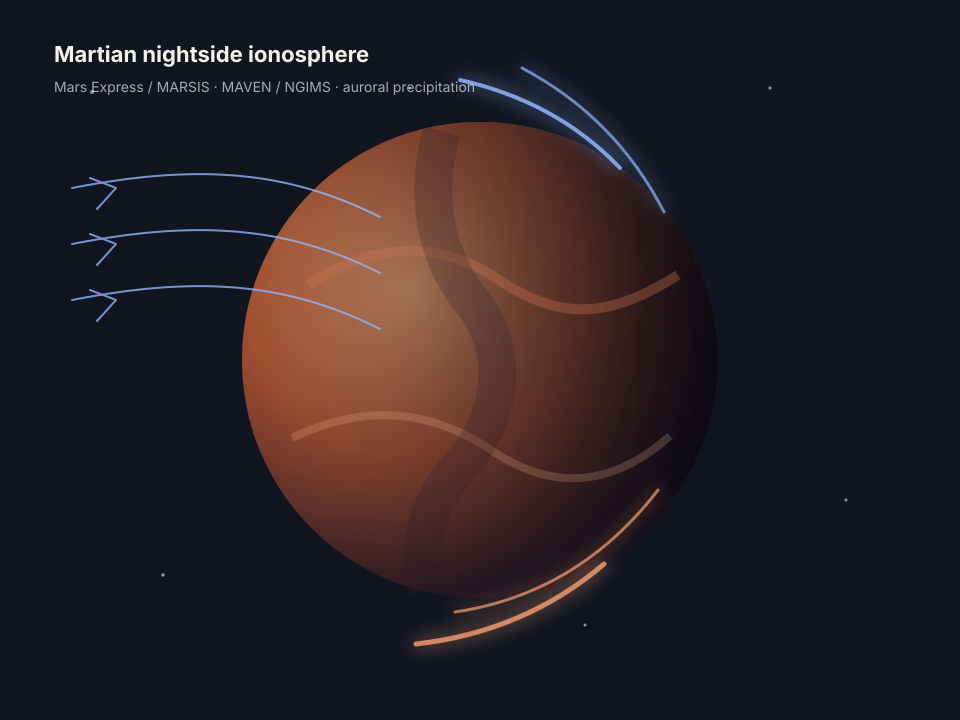

Nightside ionosphere
Global characteristics of nightside ionospheric detections and peak electron densities observed by Mars Express/MARSIS.
I study the Martian nightside ionosphere, auroral electron precipitation, and ion composition using observations from Mars Express and MAVEN.
京都大学大学院理学研究科 地球惑星科学専攻 博士後期課程。Mars Express/MARSIS と MAVEN の観測データを用いて、火星夜側電離圏の生成機構、太陽風・地殻磁場依存性、オーロラ電子降下との関係を研究しています。

Mars has no global intrinsic magnetic field, but crustal magnetic fields, solar wind interaction, and energetic electron precipitation shape its nightside plasma environment.
Global characteristics of nightside ionospheric detections and peak electron densities observed by Mars Express/MARSIS.
Connections between electron precipitation, auroral activity, and nightside ionospheric plasma production.
Ion species distributions on the nightside observed by MAVEN/NGIMS, including O⁺, O₂⁺, CO₂⁺, and NO⁺.
Replace the placeholder URLs below with your actual profiles before publishing.
Eight years of Mars Express and MAVEN data reveal how the nightside ionosphere responds to solar wind conditions and crustal magnetic fields.
, et al. Reinvestigating the Nightside Ionosphere of Mars With 8 Years of Mars Express and MAVEN Data.